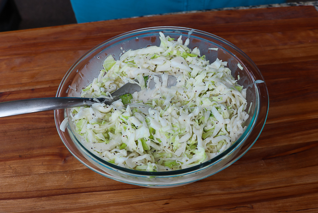

Savory Southern Cole Slaw

Description
All my life, this is the only cole slaw I'd ever eat. My mom would make it almost every Sunday as one of the pairings for her pot roast. It's a very simple recipe learned from her mother-in-law which makes it unique compared to most restaurants' recipes I'd had. It always seemed to be a hit with friends when I would make it.
Ingredients
-1/2 bag of Precut cabbage
-1/4 cup Apple Cider Vinegar
-1 tbsp Pepper (the more the better)
Steps
1. Soak the minced onions in the apple cider vinegar for about 30 minutes
2. Mix salt, pepper, and garlic powder in small bowl
3. Stir seasoned mix into mayo
4. Put cabbage in mixing bowl
5. Pour half of mayo mixure in with cabbage and stir well.
6. Let sit for a few minutes while cabbage absorbs mixture and add more as long as it's not looking soupy
7. Cover and put in refrigerator for at least half an hour(longer the better) and enjoy